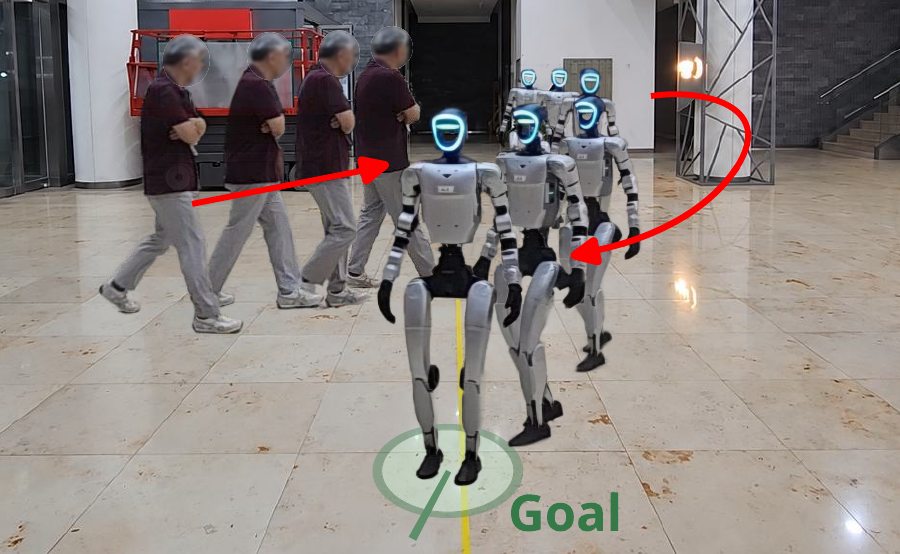
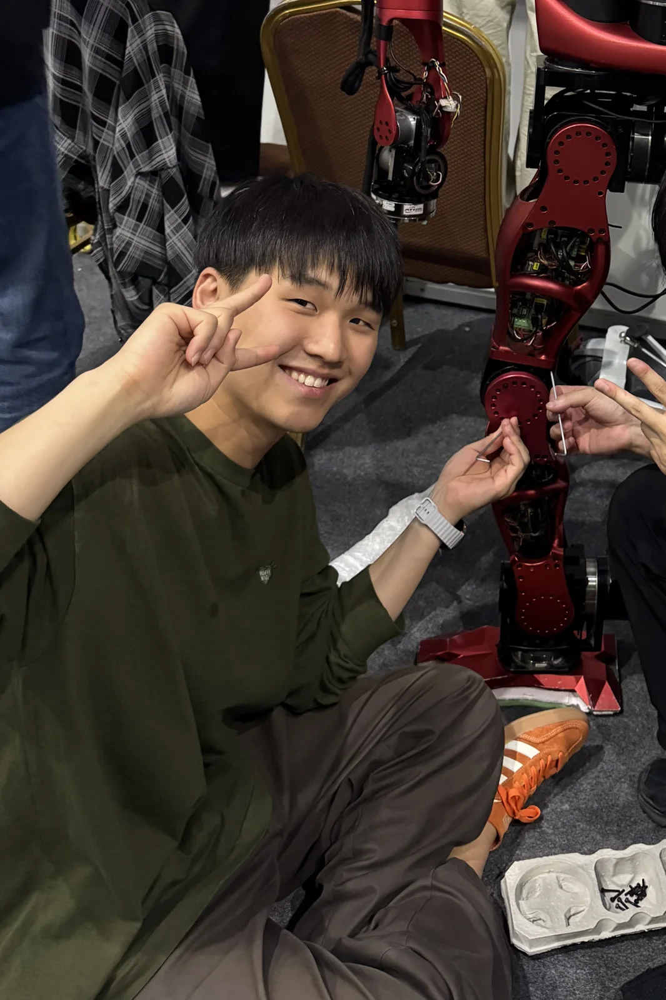
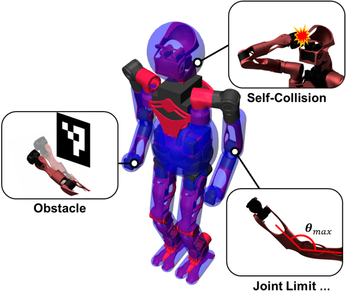

DODGER: Safety-Guided Reinforcement Learning for Robot Navigation Among Dynamic Obstacles
Under Review

ABOUT ME
M.S. Student in Intelligence and Information
Seoul National University
sang0823 (at) snu.ac.kr
I am an M.S. student in Intelligence and Information at Seoul National University, where I work in the Dynamic Robotic Systems Lab (DYROS). My research interests include humanoid locomotion and whole-body control. I have worked on safety-critical control for humanoid robots and am also interested in perception-based locomotion.
I earned my B.S. in Mechanical Engineering from Sungkyunkwan University, graduating magna cum laude.
You can view my CV here .
* Equal contribution
For a complete and current record, please visit my Google Scholar profile.

Under Review

International Journal of Control, Automation and Systems (IJCAS), 2026
IEEE/RSJ International Conference on Intelligent Robots and Systems (IROS), 2026
IEEE Access, 2025
Spring 2026 · Prof. Jaeheung Park
Jan. 2026